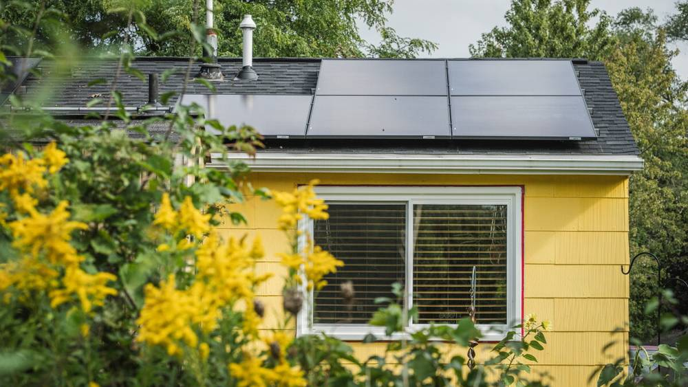

미국 앤아버시 공영 '지속가능 에너지 유틸리티', 저소득 가구까지 넓혀…2027년엔 시 전역에 개방

브라이언트 동네 90여 가구에 지붕 태양광·배터리 설치한 시범사업 다음 단계, 새로 20곳 설치
미국 미시간주 앤아버시가 직접 운영하는 공영 전력사업 '지속가능 에너지 유틸리티(SEU)'가 시범 지역을 넘어 다른 동네와 저소득 가구로 문을 넓힌다. 앤아버시는 그동안 스톤스쿨·엘스워스 일대 브라이언트 동네 90여 가구에 지붕 태양광과 배터리를 설치해 왔으며, 이번 다음 단계에서는 소득 기준을 충족하는 주민을 새로 받는다. 쇼샤나 렌스키 SEU 사무국장은 이용 가구들이 요금 부담과 악천후 때 정전 대비 성능에 만족하고 있다며, 더 안정적이고 저렴한 전기요금과 정전에도 버티는 서비스를 제공하고 있다고 말했다. 새로 설치하는 20곳은 곧 가동에 들어가며, 시는 2027년에는 모든 시민과 사업체가 SEU를 에너지 선택지로 쓸 수 있게 할 계획이다.
시민에너지 관점
앤아버는 민간 대형 전력회사 옆에 시가 직접 세운 작은 공영 유틸리티로 지붕 태양광과 배터리를 깔아, 요금과 정전 대비를 함께 해결하는 길을 보여 주고 있다. 공공이 하면 비싸고 느리다는 우려가 있지만, 첫 90여 가구에서 성과를 확인한 뒤 저소득 가구부터 넓히는 단계적 방식은 그 걱정에 대한 답이 된다. 우리 지자체 에너지공사도 공영주차장 태양광에 머물지 말고 주택 지붕과 배터리를 묶어 주민에게 직접 전기를 파는 동네 단위 사업으로 나아가야 한다. 시민과 지방의회는 지역 에너지공사에 이런 주민 직결형 사업 계획을 요구할 때다.
출처: WEMU 2026-11-14 Ana Longoria 원문 보기
米アナーバー市の公営「持続可能エネルギー・ユーティリティ」、低所得世帯まで拡大…2027年に市全域へ開放
ブライアント地区の90余世帯に屋根置き太陽光と蓄電池を設置したパイロット事業の次の段階、新たに20カ所設置
米ミシガン州アナーバー市が直接運営する公営電力事業「持続可能エネルギー・ユーティリティ（SEU）」が、パイロット地域を越えて他の地区や低所得世帯にも門戸を広げる。市はこれまでストーンスクール・エルズワース一帯のブライアント地区の90余世帯に屋根置き太陽光と蓄電池を設置してきたが、次の段階では所得基準を満たす住民を新たに受け入れる。SEUのショシャナ・レンスキー事務局長は、利用世帯が料金負担と悪天候時の停電への備えに満足していると述べ、より安定して手頃な電気料金と停電にも耐えるサービスを提供していると語った。新たに設置する20カ所は近く稼働し、市は2027年にはすべての市民と事業者がSEUをエネルギーの選択肢として使えるようにする計画だ。
市民エネルギーの視点
アナーバーは民間の大手電力会社の隣に市が自ら設けた小さな公営ユーティリティで屋根置き太陽光と蓄電池を広げ、料金と停電対策を同時に解決する道を示している。公共がやると高くて遅いという懸念はあるが、最初の90余世帯で成果を確かめてから低所得世帯へと広げる段階的な方法は、その懸念への答えになる。韓国の自治体エネルギー公社も公営駐車場の太陽光にとどまらず、住宅の屋根と蓄電池を束ねて住民に直接電気を売る地区単位の事業へ進むべきだ。市民と地方議会は地域のエネルギー公社に、こうした住民直結型の事業計画を求める時だ。
出典: WEMU 2026-11-14 Ana Longoria 原文を読む
美国安娜堡市公营“可持续能源公用事业”扩大至低收入家庭…2027年向全市开放
在布莱恩特社区90多户安装屋顶光伏和电池的试点进入下一阶段，新增20处安装
美国密歇根州安娜堡市直接运营的公营电力事业“可持续能源公用事业（SEU）”将从试点地区扩展到其他社区和低收入家庭。该市此前已在斯通斯库尔—埃尔斯沃思一带的布莱恩特社区为90多户家庭安装屋顶光伏和电池，下一阶段将新纳入符合收入标准的居民。SEU执行主任肖莎娜·伦斯基表示，用户对电费负担和恶劣天气时的停电保障感到满意，项目正在提供更稳定、更实惠的电费以及停电时也能维持的服务。新增的20处设施将很快投入运行，市政府计划在2027年让所有市民和企业都能把SEU作为能源选择。
市民能源视角
安娜堡在民营大型电力公司之外由市政府自建小型公营公用事业，推广屋顶光伏和电池，展示了同时解决电费和停电问题的路径。虽然有人担心公共部门做事又贵又慢，但先在首批90多户验证成效、再从低收入家庭开始扩大的分阶段做法，正是对这种担忧的回答。韩国地方能源公社也不应停留在公营停车场光伏，而应走向把住宅屋顶和电池整合起来、直接向居民售电的社区型事业。市民和地方议会应当向本地能源公社提出这类直连居民的事业计划。
来源: WEMU 2026-11-14 Ana Longoria 查看原文
Ann Arbor's municipal Sustainable Energy Utility expands to income-eligible households, aims to open citywide in 2027
Next phase of the pilot that put rooftop solar and batteries on more than 90 Bryant-area homes; 20 new installations coming
The City of Ann Arbor, Michigan, is expanding its city-run Sustainable Energy Utility (SEU) beyond its pilot area to other neighbourhoods and income-eligible residents. The SEU has installed rooftop solar and batteries for more than 90 households in the Bryant neighbourhood around the Stone School and Ellsworth area, and its next phase opens enrolment to residents who meet income criteria. SEU Executive Director Shoshannah Lenski said participants have been pleased with the service's affordability and its reliability during weather events, adding that it gives them more stable, more affordable bills and resilience in an outage. Twenty new installations will begin operating soon, and the city plans to make the SEU an energy option for all residents and businesses in 2027.
Citizen Energy View
Ann Arbor has built a small municipal utility alongside a large private power company and is using rooftop solar and batteries to tackle bills and outages together. Some worry that public projects are expensive and slow, but proving results with the first 90-odd homes and then expanding to low-income households first answers that concern. Korean municipal energy corporations should go beyond solar on public car parks and move to neighbourhood-scale schemes that bundle home rooftops and batteries and sell power directly to residents. Citizens and local councils should press their energy corporations for such resident-first plans.
Source: WEMU 2026-11-14 Ana Longoria Read the original